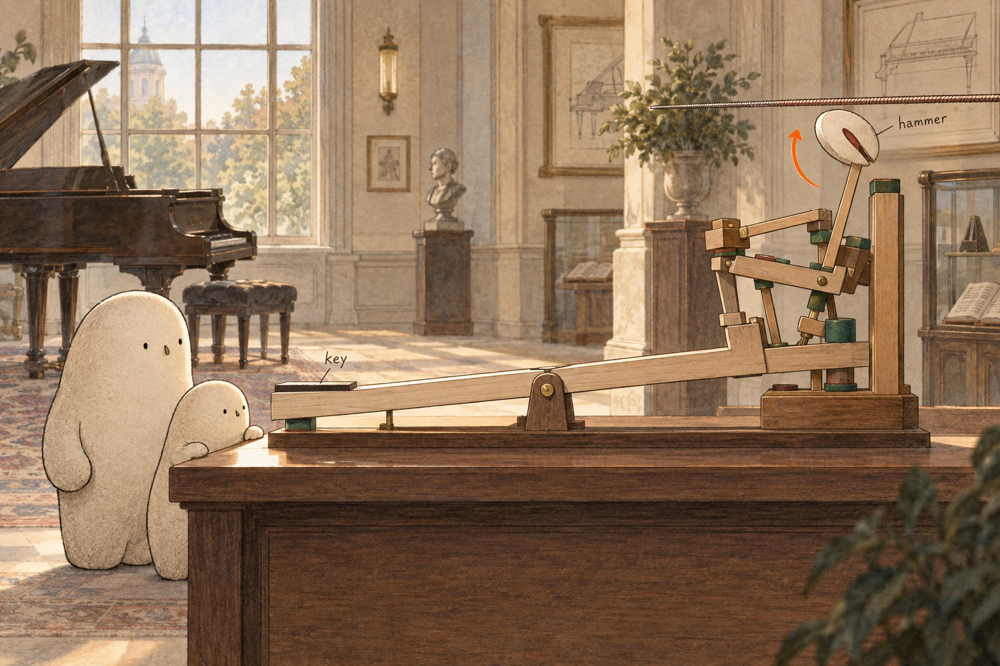

WONDER DAILY GRADE 2 · WRITING
Give the note a path.
The note inside. · Curiosity day
Name __________________________ Date _______________
Choose one picture from Little's search. Tell what moves and what happens next. Draw or write a clue that helped you understand the note.



Draw one detail from your scene. Add an arrow or a label to show a movement or a difference.
key · hammer · string · vibration · bridge · soundboard · pitch
When a key moves, … What does the action help the hammer do?
The soundboard helps because … How does the broad wood help move air?
If only the string's length changes, … Which length could make the lower sound?
Read it together and point to the detail your words explain. If you are writing, check the first capital and the ending mark.